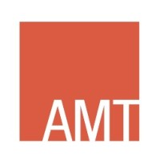
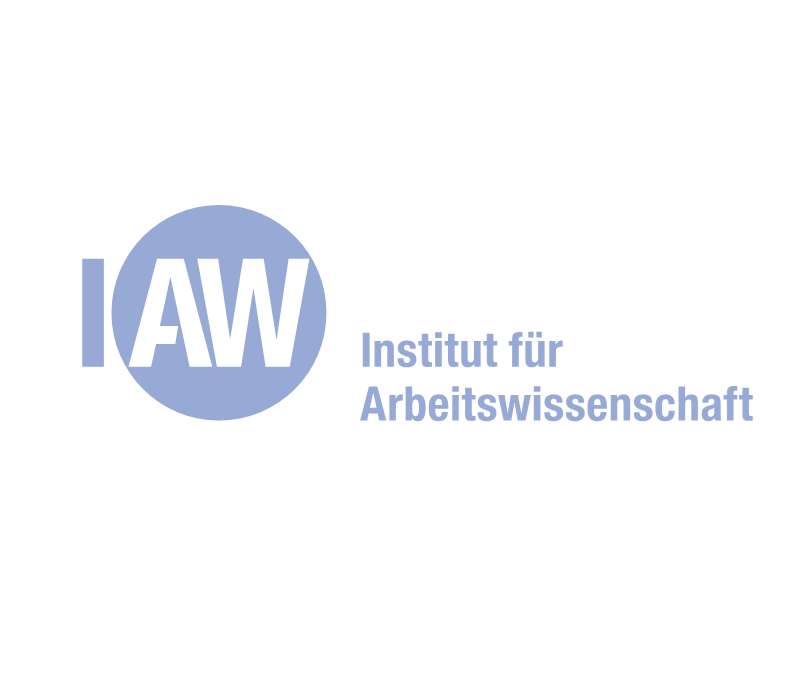
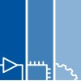

|
Working Student, DLR: Institute of Robotics and Mechatronics
Jan 2026 – Present
- Model-based surface generation for offline trajectory planning of a SARA robot.
- Exploring text-prompt diffusion point cloud models for generative surface generation.
- Evaluating surface/mesh quality for downstream offline planning.
|
|

|
Student Research Assistant, Institute for Advanced Mining Technologies (RWTH Aachen)
Jul 2025 – Jan 2026
/ Experience Letter
- Stereo vision pipeline on NVIDIA Jetson Orin using Isaac ROS Image Pipeline (USB cameras).
- ROS2 package development, debugging, and Docker-based deployment (rqt tooling).
- Point cloud processing, segmentation, and analysis.
|
|

|
Project Student, Industrial Engineering and Ergonomics Institute (RWTH Aachen)
Apr 2025 – Jan 2026
- Built a haptic teleoperation demonstrator for industrial robotic grinding.
- Developed ROS2 workflows and Unity-based simulation for the Franka Emika Panda robot.
|
|

|
Student Research Assistant, Mechatronics and Mobile Propulsion Institute (RWTH Aachen)
Jan 2024 – Sep 2024
/ Experience Letter
- Autonomous ship navigation and control allocation for USV thruster configurations.
- Trajectory planning in ROS/Gazebo with GPS–IMU sensor fusion and synchronization.
|

|
CAE Intern, Mercedes-Benz R&D India
Jan 2023 – Jul 2023
/ Reference Letter
- Finite-element simulation studies for BIW structures.
- Structural optimization and manufacturability analysis support.
|